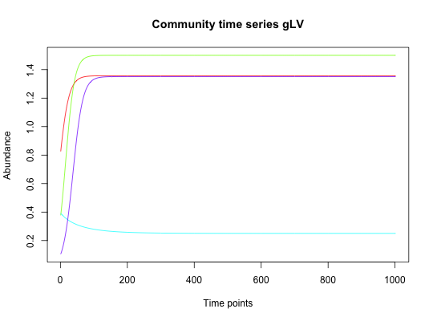

Simulate a community time series using the generalized Lotka-Volterra model, defined as $$\frac{dx}{dt}=x(b+Ax)$$ where x is the vector of species abundances, A is the interaction matrix and b the vector of growth rates.
glv(N = 4, A, b = runif(N), y = runif(N), tstart = 0, tend = 100, tstep = 0.1)
| N | species number |
|---|---|
| A | interaction matrix |
| b | growth rates |
| y | initial abundances |
| tstart | initial time point |
| tend | final time point |
| tstep | time step |
a matrix with species abundances as rows and time points as columns, column names give time points
ricker for the Ricker model
#> [1] "Adjusting connectance to 0.02" #> [1] "Initial edge number 16" #> [1] "Initial connectance 1" #> [1] "Number of edges removed 12" #> [1] "Final connectance 0" #> [1] "Final connectance: 0"